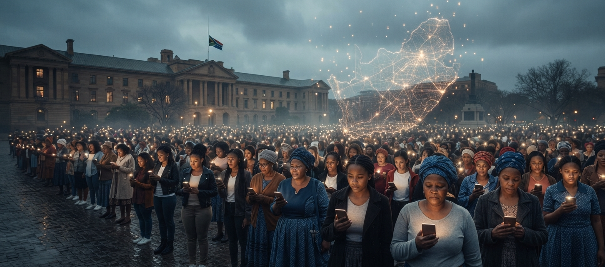

Digital Intervention · South Africa · 2026
South Africa Called Gender-Based Violence a National Disaster
AI Chatbots Are Answering the Call

Introduction
In 2020, Leonora Tima's 19-year-old relative, nine months pregnant, was murdered and her body abandoned beside a highway near Cape Town. The perpetrator was never prosecuted. Her tragic death barely made news headlines; the sheer volume of gender-based violence (GBV) cases in South Africa meant it was treated as another statistic.
That silence turned into something. It became the start of Gender Rights in Tech, known as GRIT. GRIT is a non-profit group from South Africa. They created Zuzi — a chat tool that uses artificial intelligence. It is one of the tools, like this, that puts survivors first. It was made by creators. It aims to fight against gender-based violence and domestic abuse.
The Scale of the Crisis
South Africa endures some of the highest rates of Gender-Based Violence and Femicide globally. The national government formally recognised the crisis as a national disaster, invoking systemic interventions to address the widespread emergencies. Findings from the Human Sciences Research Council (HSRC) baseline study reveal that 33.1% of South African adult women have experienced physical violence in their lifetime, while more than 35% have suffered sexual violence.
However, police reports always show a truth: many cases of GBVF that are reported never lead to arrests or convictions. The problem is not only the violence. People are afraid to speak up because they worry about being judged, don't have a way to get to the police, and face many obstacles in the system.
One person gets help fast. Another waits. One can call for aid. The other cannot. The technology that should be a tool for safety becomes a barrier for many.
Viewing Digital Intervention Through a 4IR Lens
Addressing this structural crisis requires viewing digital tools through the lens of the Fourth Industrial Revolution (4IR). 4IR technologies, specifically cloud-hosted microservices, Natural Language Processing, and secure mobile APIs, provide the essential scale, connectivity and privacy needed to reach survivors directly on their mobile devices.
The Technologies Answering the Call
4IR initiatives show how local software solutions fill important emergency gaps:
Zuzi (GRIT Platform)
Working as a trauma-informed AI assistant, Zuzi gives anonymous, non-judgmental help about legal rights, protection orders and trauma support in many South African languages. The app has a panic feature that records evidence, sends quick emergency help, and keeps files in a safe cloud vault for legal cases.
SafeSigns
SafeSigns is a platform built with teenage girls from Gqeberha. It runs on WhatsApp and automatically offers interactive modules on safety planning, emotional well-being, and identifying abusive relationship patterns — tailored specifically for teenagers.
rAInbow
Developed by AI for Good and domestic social justice partners, rAInbow uses AI storytelling on messaging apps to help users recognise domestic abuse patterns and access confidential helpline directories 24/7.
Local Benefits and Persistent Structural Barriers
For people who have been through trauma — especially in high-density informal settlements and under-resourced areas across KwaZulu-Natal and Gauteng — these tools remove physical barriers to reporting. A survivor can ask about their rights or send a help signal quietly from a phone without having to travel far to a police station or deal with bad reactions. Furthermore, cloud-based evidence vaults preserve digital photos and audio recordings that an abuser might otherwise destroy.
However, operational challenges persist:
- The Digital Divide and Data Costs: While platforms are optimised for low data usage, downloading apps or maintaining active messaging sessions still requires connectivity that low-income women cannot always afford.
- Digital Surveillance by Abusers: Perpetrators frequently monitor or confiscate partner devices, creating severe safety risks if digital tools lack quick-exit or hidden features.
- Institutional Integration: AI chatbots can guide and triage, but they cannot replace trained healthcare workers, social workers, or dedicated police officers.
South Africa's Infrastructure Readiness
South Africa's policy framework is clear. The National Strategic Plan on Gender-Based Violence and Femicide (NSP-GBVF) and the national disaster declaration provide a mandate for rapid crisis intervention.
However, technological readiness remains uneven. A survivor with a smartphone and fibre or 4G coverage in an area experiences a vastly different response network than a woman in rural KwaZulu-Natal struggling with poor cellular reception and power interruptions. The gap is real. The tools are not equal. The access is not the same.
Conclusion
I feel that AI chatbots and mobile emergency APIs do not replace empathy or judicial reform. Instead, 4IR technologies act as force multipliers — breaking silence, securing evidence and reaching survivors who would otherwise suffer alone. I think South Africa's fight against gender-based violence needs reporting infrastructure treated as an essential public safety utility.
References
- CIO Bulletin (2025) South African App Uses Chatbot to Fight Gender Violence.
- Gender Rights in Tech (GRIT) (2025) Survivor-Centred Tech Against GBV.
- Human Sciences Research Council (HSRC) (2024) The First South African National Gender-Based Violence Study: A Baseline Survey on Victimisation and Perpetration.
- Human Sciences Research Council (HSRC) (2025) Violence against women in South Africa: intersecting vulnerabilities.
- SAnews (2024) Over seven million women have experienced physical violence, study reveals.
- Soul City Institute for Social Justice (2024) rAInbow Digital Platform.